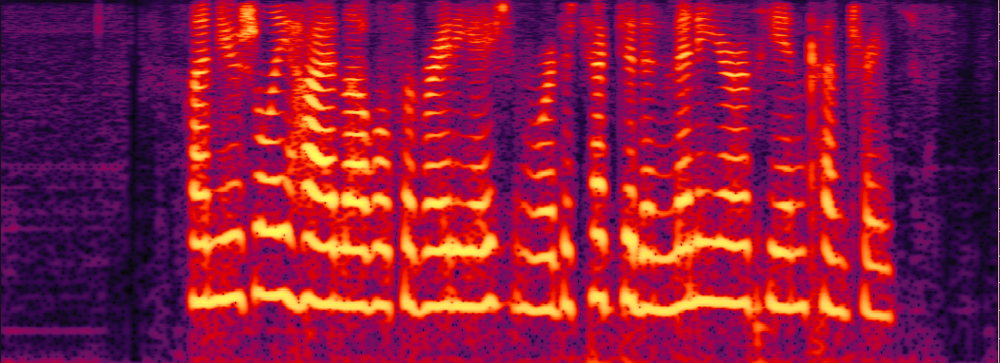
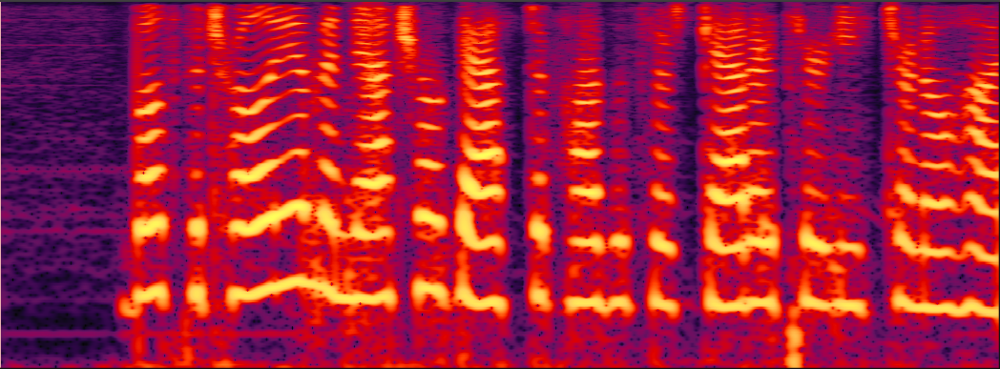

Demo for Speaker Diarization aware Multiple Target Speech Separation (SD-MTSS) model
Arxiv: not yet available
Demo 1: MTSS Model
The following table presents, for each evaluation sentence, three separated utterances generated by the pre-trained model, MTSS-ReLU, and MTSS-Softmax, respectively. pre-trained model: the pre-trained SpEx+ model from https://github.com/xuchenglin28/speaker_extraction. MTSS-ReLU: Using ReLU as the activation function and do not impose constraints on masks. MTSS-Softmax: Using softmax function to limit the sum of masks to 1.
| id | 1 | 2 | 3 |
| Mixture |  |
||
| pre-trained model | |||
| MTSS-ReLU model | |||
| MTSS-Softmax model |  |  |
Demo 2: SD-MTSS model
The following table presents, for each evaluation sentence, three separated utterances generated by the SpEX+ model and SD-MTSS model, respectively. The enrollment wave of both models is generated based on the results of the SD model.
| Id | 1 | 2 | Avg CER |
| Mixture | 96.7% | ||
| SpEx+ | 45.8% | ||
| SD-MTSS | 35.97% |